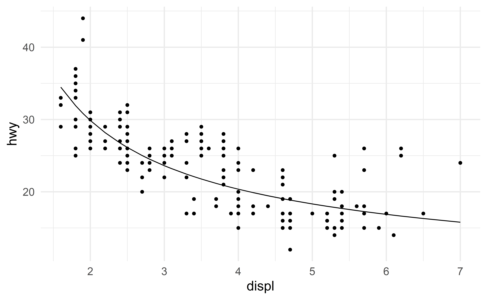

Multiple Linear Regression Models
STA 101L - Summer I 2022
Raphael Morsomme
Welcome
Announcements
- Find the last person you have not worked with
- Prediction project
- teams
- deadlines: May 31 (model and presentation) and June 1 (report)
Project - reading in the data
Recap
- simple linear regression model
\[ \text{hwy} \approx \beta_0 + \beta_1 \text{cty} \]
- residuals
- least-square estimates
- parameter interpretation
- model comparison with \(R^2\)
- outliers
Outline
- multiple linear regression
- categorical predictor
- feature engineering
- transformation
- combination
- interaction
Multiple linear regression
Remember, to improve our initial model with \((\beta_0, \beta_1) = (1, 1.3)\), we could
- find better estimates \(\Rightarrow\) least-square estimates,
- use additional predictors \(\Rightarrow\) multiple linear regression models
For instance, to predict hwy we could include multiple variables in our model.
The mpg data set
# A tibble: 4 x 11
manufacturer model displ year cyl trans drv cty hwy fl class
<chr> <chr> <dbl> <int> <int> <chr> <chr> <int> <int> <chr> <chr>
1 audi a4 1.8 1999 4 auto(l5) f 18 29 p compa~
2 audi a4 1.8 1999 4 manual(m5) f 21 29 p compa~
3 audi a4 2 2008 4 manual(m6) f 20 31 p compa~
4 audi a4 2 2008 4 auto(av) f 21 30 p compa~Instead of fitting a model with only cty or only displ, we could fit a linear regression model with both predictors!
Linear regression with 2 predictors
The model equation is
\[ \text{hwy} \approx \beta_0 + \beta_1 \text{cty} + \beta_2 \text{displ} \]
We can find the least-square estimates (minimizing the SSR) with the command lm
Call:
lm(formula = hwy ~ cty + displ, data = d)
Coefficients:
(Intercept) cty displ
1.15145 1.32914 -0.03432 which give the following regression equation
\[ \text{hwy} \approx 1.15 + 1.33 \text{cty} - 0.034 \text{displ} \]
Interpretation
- Interpreting \(\hat{\beta}_1 = 1.33\):
- “Keeping
displconstant, for each additional unit incty, we would expecthwyto be higher, on average, by 1.33 units.”
- “Keeping
- Interpreting \(\hat{\beta}_2 = -0.034\):
- “Keeping
ctyconstant, for each additional unit indispl, we would expecthwyto be lower, on average, by 0.034 unit.”
- “Keeping
- Interpreting \(\hat{\beta}_0 = 1.15\):
- “For a car with
ctyanddisplequal to 0, we would expecthwyto be 1.15.” - meaningless in this context.
- “For a car with
Special case: categorical predictor
In a regression model, categorical predictors are represented using indicator variables.
To represent a categorical predictor with \(k\) levels (categories), we use \((k-1)\) indicator variables1.
Including drv
For instance, the categorical variable drv has \(k=3\) levels (4, f and r), so we can represent it with \(3-1=2\) indicator variables with the following model equation
\[ \text{hwy} \approx \beta_0 + \beta_1 \text{drv_f} + \beta_2 \text{drv_r} \]
Tip
For a binary variable \(k=2\), so we only need \(k-1=1\) indicator variable.
For instance, to include the binary variable year_binary, we only added a single indicator variable to the model.
Using categorical predictors in R
Call:
lm(formula = hwy ~ drv, data = d)
Coefficients:
(Intercept) drvf drvr
19.175 8.986 1.825 The model equation with the least-square estimates is
\[ \text{hwy} \approx 19.175 + 8.986 \text{drv_f} + 1.825 \text{drv_r} \]
Interpreting the output
\[ \text{hwy} \approx 19.175 + 8.986 \text{drv_f} + 1.825 \text{drv_r} \]
If a new vehicle has a drv that is:
4, then the two indicator variablesdrv_fanddrv_rtake the value 0, and the prediction is \(\widehat{hwy} = 19.175\)
f, then the indicator variablesdrv_ftakes the value 1 anddrv_rthe value 0, and the prediction is \(\widehat{hwy} = 19.175 + 8.986 = 28.161\)
r, then the indicator variablesdrv_ftakes the value 0 anddrv_rthe value 1, and the prediction is \(\widehat{hwy} = 19.175 + 1.825 = 21\)
The level (category) 4 is called the reference (baseline) level.
05:00
Fitting a larger model
Let us fit a model with cty, drv and disp
Call:
lm(formula = hwy ~ cty + drv + displ, data = d)
Coefficients:
(Intercept) cty drvf drvr displ
3.424 1.157 2.158 2.360 -0.208 Its \(R^2\) is 0.938.
Unsurprisingly, including additional predictors makes the regression line closer to the points \(\Rightarrow\) residuals are smaller \(\Rightarrow\) SSR is smaller \(\Rightarrow\) \(R^2\) is larger.
04:00
Fitting the full1 model
Thanks to the additional predictors, the residuals are very small, making \(R^2\) close to \(1\).
Large \(R^2\)
- seems great!
- …but we will see in the next lecture that this is not always a good sign.
Group exercise - multiple linear regression
Exercise 8.9
- fit the model in
R - identify the type of each variable
- identify the baseline level of the categorical predictors
- do parts a-d
05:00
Statistics as an art – feature engineering
Feature engineering
We saw that adding predictors to the model seems to help.
However, the variables included in the data set, e.g. displ, year, etc, may not be the most useful predictors for hwy.
Feature engineering refers to the creation of new predictors from the raw variables.
Tip
This is where your understanding of the data, scientific knowledge and experience make a big difference.
Transforming a variable
Nonlinearity
Consider the relation between the predictor displ and the response hwy

The relationis not exactly linear.
Modeling nonlinearity
Let us include the predictor \(\dfrac{1}{\text{displ}}\) to capture this nonlinear relation.
Here is the model equation
\[ \text{hwy} \approx \beta_0+ \beta_1 \text{displ} + \beta_2 \dfrac{1}{\text{displ}} \]
The least-square coefficient estimates are
And the regression lines captures the nonlinear relation.
Combining variables
The trees data set
- Measurements of the diameter, height and volume of timber in 31 felled black cherry trees.
- Note that the diameter (in inches) is erroneously labelled
Girthin the data - The diameter (
Girth) is measured at 4 ft 6 in above the ground. - Source: Atkinson, A. C. (1985) Plots, Transformations and Regression. Oxford University Press.
Combining variables
Transforming a variable may be helpful …but we can go a step further!
We can construct new predictors by combining existing variables.
Geomtric considerations
Suppose we want to estimate Volume (expensive to measure) from Girth and Height (cheap to measure).
You might decide to approximate the shape of a tree with a shape that is between a cylinder and a cone.
From geometry, we know that the volume of a cylinder is
\[ V = \pi r^2 h \]
and that of a cone is
\[ V = \frac{1}{3} \pi r^2 h \]
This suggests approximating the volume of a tree with the following model
\[ \text{Volume} = \beta_1 \left[ \left(\dfrac{\text{Girth}}{2}\right)^2 * \text{Height}\right] = \beta_1X \]
where
- \(\beta_1\) is an unknown parameter that we expect to be between \(\pi\) (pure cylinder) and \(\frac{1}{3}\pi\) (pure cone)
- \(X = \left[\left(\dfrac{\text{Girth}}{2}\right)^2 * \text{Height}\right]\) is our new predictor.
To accomplish this, we simply create a new variable corresponding to \(\left[\left(\dfrac{\text{Girth}}{2}\right)^2 * \text{Height}\right]\).
Before doing that, we just need to transform Girth into feet to ensure that all variables have the same units.
d_tree_comb <- d_tree %>%
mutate(
Girth_ft = Girth / 12,
radius = Girth_ft / 2,
r_squared = radius^2,
r2h = r_squared * Height
)
head(d_tree_comb, n = 3) Girth Height Volume Girth_ft radius r_squared r2h
1 8.3 70 10.3 0.6916667 0.3458333 0.1196007 8.372049
2 8.6 65 10.3 0.7166667 0.3583333 0.1284028 8.346181
3 8.8 63 10.2 0.7333333 0.3666667 0.1344444 8.470000Our model does not include an intercept. To exclude the intercept from the model, I use -1 in the lm command.
Call:
lm(formula = Volume ~ r2h - 1, data = d_tree_comb)
Coefficients:
r2h
1.214 The coefficient estimate is between the two anticipated bounds \(\pi=3.14\) and \(\frac{\pi}{3}=1.047\)!
Comparison with the full model
Although \(R^2\) has a different meaning when there is no intercept, it can be still used for comparison1.
[1] 0.9696913[1] 0.9950219Our new variable \((\dfrac{\text{Girth}}{2})^2 * \text{Height}\) improves the model!
Note that the full model has two predictors, while our geometry-based model has only a single predictor!
Feature engineering
A carefully constructed predictor can do a better job than multiple raw predictors!
Special case of data combination: interaction
Predicting amateur jogging races duration
Suppose you are interested in predicting the average run time (duration) of amateur jogging races.
Two variables that impact the duration are (i) the distance of the race, and (ii) the weather.
For simplicity, we measure the weather as either good (nice weather) or bad (rain, heat wave, etc).
Fixed effect weather?
Te full model is
\[ \text{duration} \approx \beta_0 + \beta_1 \text{distance} + \beta_2 \text{weather_bad} \]
where \(\beta_1\) indicate the effect of an additional miles on the expected duration and \(\beta_2\) the effect of bad weather.
Note that the effect of weather is fixed in this model, say “\(+5\) minutes” if \(\hat{\beta}_2 = 5\).
Is this reasonable? No!
\(\Rightarrow\) the effect of weather should vary with distance. For shorter races, bad weather may add only 2 or 3 minutes, while for longer races, bad weather may increase the average duration by 10 or 15 minutes.
Model equation with interaction
We capture such pattern using an interaction term.
\[ \text{duration} \approx \beta_0 + \beta_1 \text{distance} + \beta_2 \text{weather_bad} + \beta_3 \text{weather_bad}*\text{distance} \]
- When the weather is good, the equation simplifies to
\[ \text{duration} \approx \beta_0 + \beta_1 \text{distance} + \beta_2 0 + \beta_3 0*\text{distance} = \beta_0 + \beta_1 \text{distance} \]
- When the weather is bad, the equation simplifies to
\[ \text{duration} \approx \beta_0 + \beta_1 \text{distance} + \beta_2 1 + \beta_3 1*\text{distance} = (\beta_0 + \beta_2) + (\beta_1+\beta_3) \text{distance} \]
Interpreting interactions
When the weather is good, the slope estimate is \(\hat{\beta}_1\), meaning that the effect of an additional miles on the average duration is \(\hat{\beta}_1\).
When the weather is bad, the slope estimate is \(\hat{\beta}_1+\hat{\beta}_3\), meaning that the effect of an additional miles on the average duration is \(\hat{\beta}_1+\hat{\beta}_3\) (not \(\hat{\beta}_1\)).
Interactions
The effect of the distance depends on the weather. Similarly, the effect of the weather depends on the distance.
\(\Rightarrow\) the two variables interact.
Recap
Recap
simple linear regression model \[ Y \approx \beta_0 + \beta_1 X \]
multiple linear regression model \[ Y \approx \beta_0 + \beta_1 X_1 + \beta_2 X_2 + \dots + + \beta_p X_p \]
categorical predictor
- \((k-1)\) indicator variables
feature engineering
- transforming variables
- combining variables
- interactions